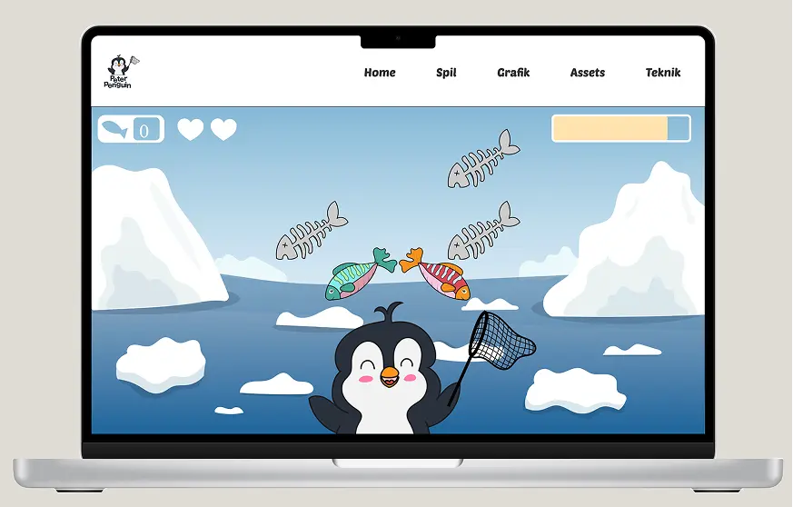

PROJEKT 3
GRUNDLÆGGENDE ANIMATION
I dette tema blev vi introduceret til programmeringssproget JavaScript og Adobe Illustrator. Vi lærte også om statemachine- og aktivitetsdiagrammer, som hjælper med planlægning og strukturering af et program. Som projekt skulle vi udvikle et spil helt fra bunden, hvor vi selv skabte grafik og animationer.
PROCESSEN
Processen begyndte med idéudvikling, hvor jeg lavede brainstorms og skitser for at vælge tema, spillekarakterer og elementer. Jeg valgte at lave et spil om pingvinen Peter, der skal fange friske fisk til sin sultne familie. Da temaet var fastlagt, rentegnede jeg skitserne i Adobe Illustrator og eksporterede dem som SVG-filer. Herefter byggede jeg spillet i VS Code med HTML, CSS og JavaScript, hvor jeg først udarbejdede aktivitets- og statemashinediagrammer for at få et klart overblik over kodningen og spillets opbygning. Koden indeholder blandt andet CSS-animationer, som giver liv til spillelementerne, fx når man klikker på en fisk. Som noget af det sidste i processen skulle vi selv indtale lyde og implementere dem i vores spil for at få den fulde oplevelse af et spil.
LÆRING
I dette projekt har jeg lært at arbejde med Adobe Illustrator og fået en bedre forståelse af, hvad programmet kan. Jeg har også lært programmeringssproget JavaScript og hvordan man med CSS-animationer kan skabe bevægelse på en hjemmeside. Hvis vi havde haft mere tid, ville jeg gerne have brugt mere tid i Illustrator til at lave flere detaljer, som for eksempel en sæl i baggrunden eller en kurv til de indsamlede fisk. Jeg ville også have udforsket, hvordan man kan opdele elementer for at skabe bevægelse med CSS-animationer, som for eksempel at få pingvinens arm til at bevæge sig, når den fanger en fisk.
LØSNING
Her kan du finde den endelige løsning, hvor alle elementer er samlet og implementeret. Klik på linket nedenfor for at se den endelige site.
emilieerikson.dk